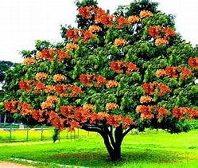
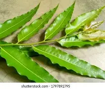
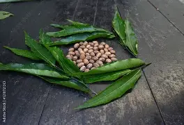

Latthe Education Socity's
Acharya Deshabhushan Ayurvedic Medical
College & Hospital,
Bedkihal-Shamanewadi - 591214.
Acharya Deshabhushan Ayurvedic Medical
College & Hospital,
Bedkihal-Shamanewadi - 591214.




Ashoka
Botanical Name : Saraka Indica Linn
Family Name: Caesalpinaceae
Local Name: Ashoka
Vernacular Name: Hindi – Ashoka , English – Asok tree
Synonyms : Hemapushpa and Taamra pallava
Classical categorization: Vedanastaapana and Rodhraadi
Habitat:Central & Eastern Himalayas, South india
Morphology : Ever green tree Leaves – Oblong –lanceolate , Flowers – fragrant , Fruit – Pod
Useful part: Stem bark & Seeds
Chemical constituents : Tannin, Catachin and Haematoxylin
Actions : Krimigna and Stambhaka
Properties:
- Rasa – Kashaya
- Tikta Guna – Laghu
- Ruksha Veerya – Sheeta
- Vipaaka -Katu
Indications : Rakta Pradara and Mutraghaata
Therapeutic administration: Cold milk boiled with the decoction of asoka bark used in Rakta pradara
Dose : Decoction 50 to 100 ml, seed powder 3 to 6 gm
Formulations : Asokaristam & Asokaghrutam